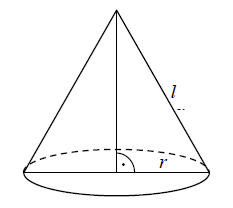
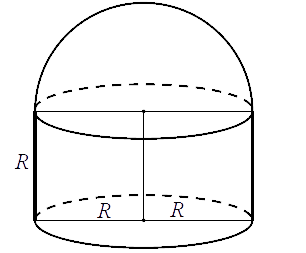

Jesteś tutaj: Matura
podstawowa - kurs - część 56 - zadania
Matura podstawowa - kurs - część 56 - zadania
Cały kurs na: ./matematyka-matura-podstawowa-kurs.html.
Objętość walca o wysokości \(8\) jest równa \(72\pi\). Promień podstawy tego walca
jest równy
A.\( 9 \)
B.\( 8 \)
C.\( 6 \)
D.\( 3 \)
D
Objętość walca, w którym wysokość jest trzykrotnie dłuższa od promienia podstawy,
jest równa \( 24\pi \). Zatem promień podstawy tego walca ma długość
A.\(4 \)
B.\(8 \)
C.\(2 \)
D.\(6 \)
C
Jeżeli wysokość stożka zwiększymy trzykrotnie, a długość promienia zmniejszymy trzy
razy, to objętość nowego stożka:
A.zwiększy się trzy razy
B.zmniejszy się trzy razy
C.zmniejszy się dziewięć razy
D.nie zmieni się
B
Stożek i walec mają takie same podstawy i równe pola powierzchni bocznych. Wtedy
tworząca stożka jest
A.sześć razy dłuższa od wysokości walca
B.trzy razy dłuższa od wysokości walca
C.dwa razy dłuższa od wysokości walca
D.równa wysokości walca
C
Pole powierzchni całkowitej walca, którego przekrojem osiowym jest kwadrat o boku
długości \( 4 \), jest równe 
A.\(256\pi \)
B.\(128\pi \)
C.\(48\pi \)
D.\(24\pi \)
D
Tworząca stożka ma długość \( 17 \), a wysokość stożka jest krótsza od średnicy
jego podstawy o \( 22 \). Oblicz pole powierzchni całkowitej i objętość tego stożka.
\(P=480\pi \), \(V=600\pi \)
Tworząca stożka ma długość \(l\), a promień jego podstawy jest równy \(r\).  Powierzchnia boczna tego stożka jest
\(2\) razy większa od pola jego podstawy. Wówczas
A.\( r=\frac{1}{6}l \)
B.\( r=\frac{1}{4}l \)
C.\( r=\frac{1}{3}l \)
D.\( r=\frac{1}{2}l \)
D
Prostokąt o bokach długości \(2\) i \(4\) obracamy wokół krótszego boku. Ile wynosi
pole powierzchni całkowitej tak otrzymanej bryły?
A.\( 16\pi \)
B.\( 24\pi \)
C.\( 32\pi \)
D.\( 48\pi \)
D
Przekrojem osiowym stożka jest trójkąt równoboczny o boku długości \(6\). Objętość
tego stożka jest równa
A.\( 6\pi \)
B.\( 18\pi \)
C.\( 9\pi\sqrt{3} \)
D.\( 27\pi\sqrt{3} \)
C
Dany jest trójkąt prostokątny o długościach boków \(a, b, c\), gdzie \(a \lt b \lt
c\). Obracając ten trójkąt wokół prostej zawierającej dłuższą przyprostokątną o kąt \(360^\circ \)
otrzymujemy bryłę, której objętość jest równa
A.\( V=\frac{1}{3}a^2b\pi \)
B.\( V=a^2b\pi \)
C.\( V=\frac{1}{3}b^2a\pi \)
D.\( V=a^2\pi +\pi ac \)
A
Przekątna przekroju osiowego walca, którego promień podstawy jest równy \(4\) i
wysokość jest równa \(6,\) ma długość
A.\( \sqrt{10} \)
B.\( \sqrt{20} \)
C.\( \sqrt{52} \)
D.\( 10 \)
D
Przedstawiona na rysunku bryła składa się z walca i półkuli. Wysokość walca jest
taka, jak promień jego podstawy i jest równa \(R\).  Objętość tej bryły jest równa
A.\( \pi R^3 \)
B.\( \frac{5}{3}\pi R^3 \)
C.\( \frac{2}{3}\pi R^3 \)
D.\( 2\pi R^3 \)
B
W stożku stosunek pola powierzchni bocznej do pola podstawy jest równy
\(\frac{3}{2}\). Oblicz sinus kąta między tworzącą a płaszczyzną podstawy tego stożka.
\(\frac{\sqrt{5}}{3}\)
Tworząca stożka o kącie rozwarcia \(\alpha \) ma długość \(8\). Pole powierzchni
całkowitej tego stożka jest równe \(48\pi\). Oblicz objętość stożka oraz miarę kąta \(\alpha \).
\(\alpha =60^\circ \) i \(V=\frac{64\pi \sqrt{3}}{3}\)
W stożku różnica długości tworzącej i promienia podstawy jest równa \(6\). Cosinus
kąta \(\alpha \) między tworzącą a płaszczyzną podstawy tego stożka jest równy \(\frac{2}{5}\).
Oblicz pole powierzchni bocznej tego stożka.
\(40\pi \)